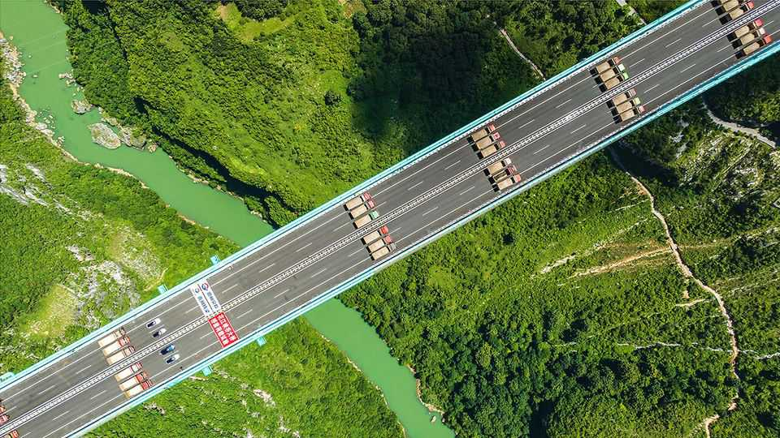
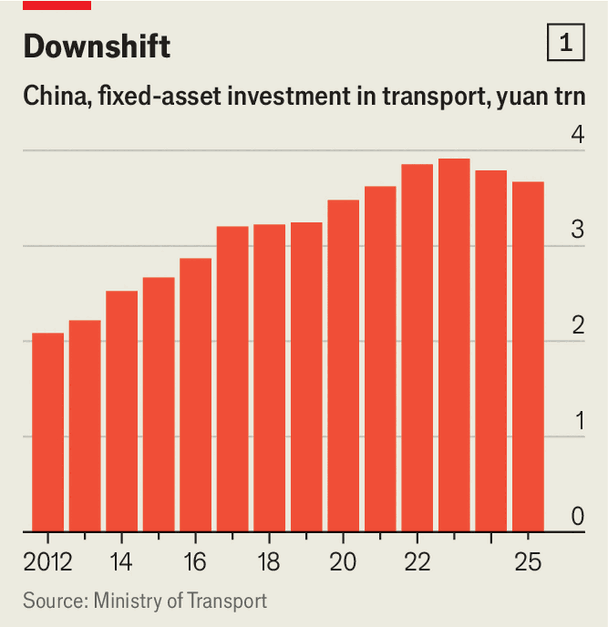
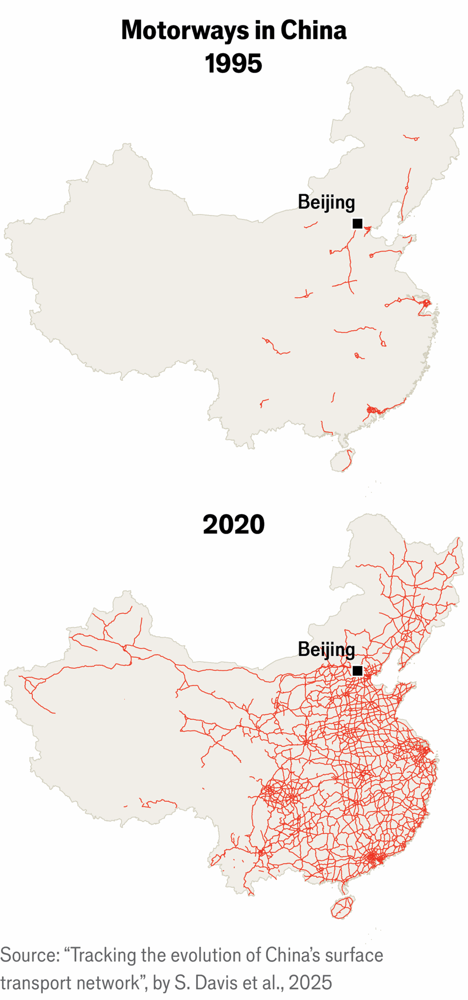
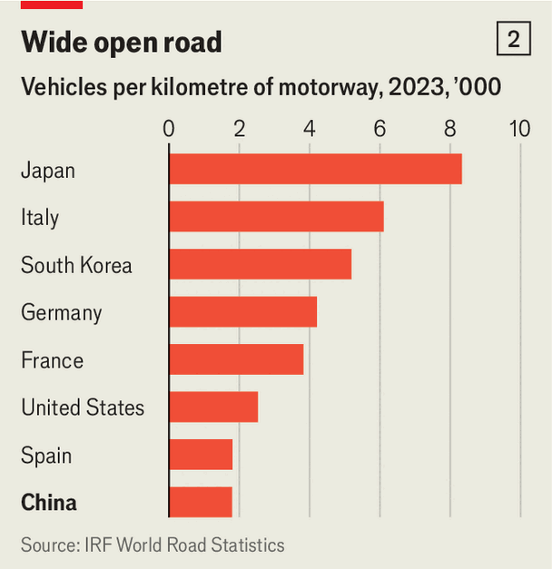
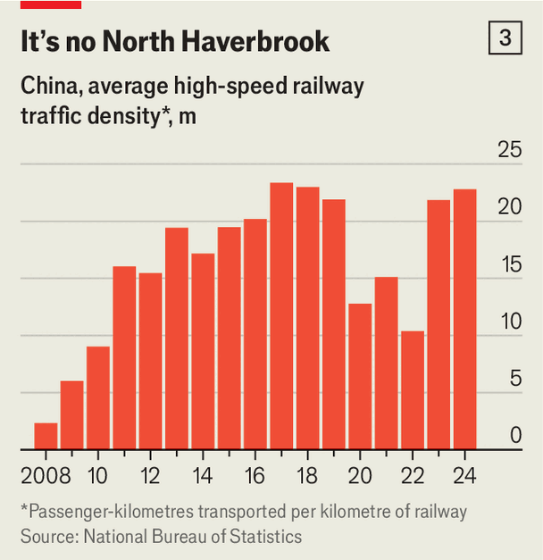
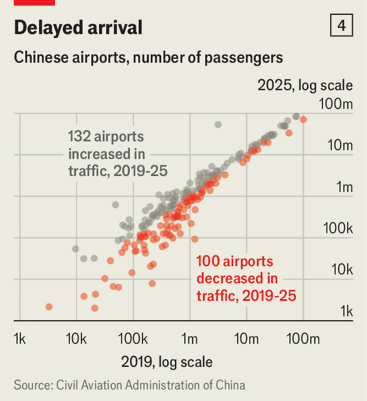

China’s investment in transport infrastructure has peaked
Has it built too many expressways and high-speed rail lines?

Oct 29th 2026
In the south-western province of Guizhou, the Huajiang bridge straddles a yawning valley hemmed in by steep mountains. It is a mind-boggling feat of engineering. With a 1,400-metre steel deck suspended 625 metres above a river, the bridge is the world’s highest: two Eiffel Towers could almost be stacked beneath it. Opened in September last year, officials boast that it cuts journey times across the canyon from two hours to two minutes.
Fewer such marvels are likely to be built. China’s years-long splurge on bridges, tunnels, expressways, high-speed rail and airports is beginning to tail off. Questions are likely to grow, however, about whether it was worthwhile. The Huajiang bridge carries a motorway (or expressway, as China calls its high-speed multi-lane roads). But the area is remote and impoverished; heavy traffic is unlikely. The local government talks up the bridge-builders’ technical achievement; far less so the likelihood that the 2.2bn yuan ($330m) cost will ever be recouped, despite road tolls and the tourists it has attracted.

In 2015 Bert Hofman, who was then the head of the World Bank’s office in China, said that having invested so much in new transport infrastructure, the country should turn its attention to keeping it in good shape. Yet China did not apply the brakes. It was not until 2023 that investment peaked in transport-related fixed assets—3.9trn yuan was spent that year (see chart 1). The authorities finally seem to agree with Mr Hofman. In July this year a senior transport official said China’s main transport network was “91% complete”, and the country would pivot from expanding to upgrading existing infrastructure. Mr Hofman jokes that he had not realised he was “so far-sighted”.
To be sure, plenty more will be built. China’s annual investment in transport infrastructure is 2.6% of GDP. That is a far lower share than after the global financial crisis of 2007-09, when it reached 9% as the country unleashed a massive stimulus package. But it remains strikingly high compared with, say, America, where the outlay was just 0.6% of GDP in 2024.
By the end of last year, China had built more than 50,000km of high-speed rail, about 70% of the global total. It plans to build another 20,000km by 2035—roughly 1.5 times the length of such tracks in operation in Europe. And China will also spend money on other types of infrastructure beyond transport. It has earmarked 25trn yuan over the next five years for electric grids, data centres, mobile-phone networks, logistics, canals and pipelines (the “six networks”, as it calls such stuff).

But in the building of transport infrastructure, China’s most conspicuous needs have been met. Long gone are the days when officials would pleadingly intone that “if you want to get rich, first build roads” (it’s a rhyming couplet in Chinese). Since opening its first expressway in 1990, China has built about 200,000km of such whizzy roads (see map)—about twice the length of motorways in America. There are now about 270 commercial airports, three times as many as in 1990. America has twice the number, but the gap is narrowing—China is adding half a dozen entirely new airports a year; America rarely builds any at all.
The humanitarian cost has been enormous: millions have been turfed off their land to make way for roads, railways, airports and other such projects—often without their consent and sometimes with little compensation. The country, however, has grown richer, and praise for the transport network, at home and abroad, is often effusive. Westerners gush about China’s fast, comfortable trains, often contrasting them with the dilapidated state of their own rail networks. The Huajiang bridge is among numerous awe-inspiring record-setters, from the world’s fastest train (430km per hour, between Shanghai and its airport) to its longest motorway tunnel (22.1km, in the far-western region of Xinjiang).
Weighing up the benefits of transport infrastructure is difficult in any country. Railways rarely pay back capital or yield a commercial profit: historical railway-building manias have ruined investors but left behind tracks that boosted economic growth for decades afterwards. China’s rail and expressway networks cannot be judged in isolation. In some places they free up capacity on older lines and roads. They can cut journey times and costs for freight. Chinese people now move around much more easily. Their mobility expands labour markets and makes manufacturing more efficient, letting firms draw on workers and suppliers across a much larger area.
Some Chinese experts, however, argue that the country has invested far more than necessary. Lu Dadao of the Chinese Academy of Sciences has called high-speed rail a “great leap forward”. That is not a compliment—it refers to Mao’s effort in the late 1950s to make China “surpass Britain and catch up with America”. That led to mass famine.
Mr Lu is not suggesting there will be such a disaster this time, but in an essay last year he argued that transport infrastructure had “significantly outpaced actual demand”. He said its achievements had “come at a significant cost”. Another critic is Li Xunlei, an economist at Zhongtai Securities, a state-controlled brokerage. In August Mr Li wrote that China had “overlooked excess capacity” in its building of transport infrastructure. In a country where criticism of the government is heavily muted, these are strong words.

Mr Li’s analysis notes a mismatch between the wealthier coastal regions that most need fast roads—such as Shanghai and Zhejiang—and those where they are being built the fastest, such as the poorer south-western regions of Yunnan and Guangxi. “The areas with the most expressways built saw the least increase in freight demand,” Mr Li wrote of the years between 2014 and 2024. In 2023 China had just under 1,800 vehicles for each kilometre of motorway, far lower than the ratio in most rich countries (see chart 2).

A lot of China’s new infrastructure is underused. Fast rail services in poorer inland regions have more empty seats than, say, the highly profitable line from Beijing to Shanghai. “On many lines…revenue can cover the operation of services but is insufficient to maintain the infrastructure,” said a World Bank review in 2019. Commercial airports have a similar problem. Between 2019 and 2025, 43% of them saw a drop in traveller numbers (not counting airports newly opened since 2019), according to data from the Civil Aviation Administration of China (see chart 4). Declines were concentrated in airports outside major hubs.
Even less economic rationale exists for the proliferation of lavish buildings linked to the new rail lines and airports. In small poorer cities, rail stations and airport terminals are often colossal—built in extravagant ultra-modern style to awe visitors. Take Yantai, a medium-sized coastal city in northern China. The glazed dome and sleek curves of its international airport, opened in 2015, won the title of “world’s most beautiful airport” at the Prix Versailles last year. Such vanity projects impress slack-jawed Westerners online. Type “China infrastructure” into YouTube and feast your eyes on the results. This surely pleases leaders in Beijing.

Top officials are, however, less happy about the debts that have piled up alongside. Local authorities have borne much of the cost of building expressways and local sections of rail. Local-government debt held in off-balance-sheet vehicles may amount to 72trn yuan, or 51% of GDP. Poorer regions have relied most on such methods—Guizhou, for one. In the end, the central government will probably have to pick up the tab for the Huajiang bridge. Managing the burden will mean less money for health care and social security: both badly in need of funding, not least to encourage consumers to spend.
If the government is betting that demand will eventually catch up with the enormous expansion of transport infrastructure, it should ponder a looming problem. China’s population is ageing rapidly, and the old do not travel as much as the young. By 2050 it will shrink by 150m, according to UN projections. There will thus be fewer passengers on the network. And fewer to admire the breathtaking views from the Huajiang bridge. ■
Subscribers can sign up to Drum Tower, our new weekly newsletter, to understand what the world makes of China—and what China makes of the world.